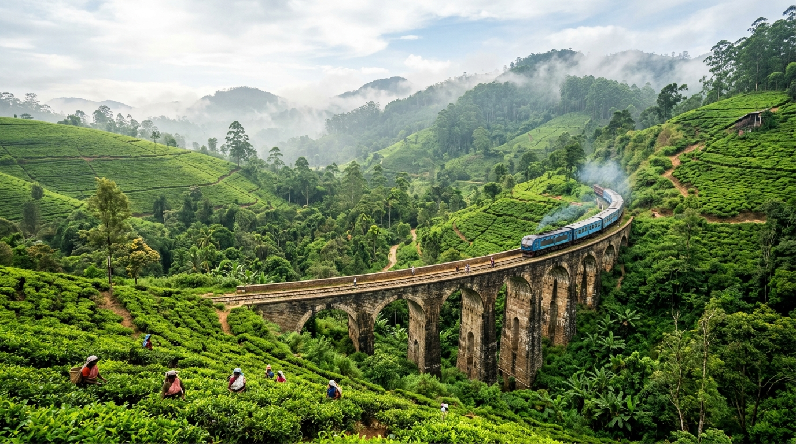

“The best decision we made for our Sri Lanka honeymoon! Our chauffeur Chaminda was a true gentleman, always 10 minutes early, vehicle sparkling clean, and his recommendations for tea plantations and hidden waterfalls in Ella were spot on. Having the fuel and highway tolls included made budgeting seamless.”
Transparency & Excellence
Trust Factors & Verified Client Reviews
See why hundreds of international families, couples, and solo travelers trust Ceylon Chauffeur for safe, luxurious, and stress-free touring across Sri Lanka.

4.98 / 5
Average Customer Rating
1,450+
Island Tours Completed
From 42 Countries100%
All-Inclusive Guarantee
Zero Hidden Surcharges100%
Licensed Chauffeur Guides
SLTDA Certified & Insured
Authentic Feedback
Verified TripAdvisor & Google Reviews
Read firsthand accounts from foreign tourists who explored Sri Lanka with our private chauffeurs.
“We booked the Toyota KDH Luxury Van for our family of 6 (including two grandparents and our 5-year-old). The van was extremely spacious with excellent rear air conditioning. Chauffeur Nalin drove with immense care along mountain roads and always had cold water ready. Unmatched professionalism.”
“Incredible wildlife safari tour! We did the 7-Day Wild & National Parks Safari. Our driver coordinated our private jeep permits at Wilpattu and Yala effortlessly. We spotted three leopards, sloth bears, and countless elephants. Response time on WhatsApp was within minutes.”
“As an American traveler, navigating Sri Lanka's roads on my own would have been daunting. Having Ceylon Chauffeur meant I could just gaze out the window at the tea estates, take calls on the high-speed onboard Wi-Fi, and relax. Truly 5-star executive hospitality.”
“We booked our trip just 48 hours before landing at Colombo. The auto-responder email gave us an immediate breakdown and within 1 hour we were connected to our coordinator on WhatsApp. Seamless airport pickup with our name board. 10/10 service.”
“The Toyota Prius was pristine, whisper-quiet, and comfortable. Driver Duminda spoke fluent English, was very patient with our photography stops, and taught us so much about Sri Lankan history. Worth every penny.”
The Ceylon Chauffeur Driver Standard
Not just drivers, but accredited cultural ambassadors dedicated to your comfort and safety.
Tourist Board Certified
Every chauffeur holds an official Sri Lanka Tourism Development Authority (SLTDA) license and identity credential.
Fluent English Speaking
Clear, polite, and articulate communication. Multilingual drivers (German, French, Russian) available upon advance request.
Defensive Driving Trained
Rigorous advanced driver training ensuring smooth, motion-sickness-free driving across winding mountain terrain.
Police Background Verified
Comprehensive annual criminal record screening and medical certifications for complete family peace of mind.
Everything You Need to Know
Answers to common questions from foreign visitors planning their Sri Lanka chauffeur tour.
Yes, absolutely. Our transparent daily rates cover all fuel for your itinerary, all expressway and airport tolls, all monument parking fees, and all driver accommodation and meals. Even if your chosen hotel does not provide driver quarters, we arrange and pay for the driver's nearby lodging. There are zero surprise costs.
Your private chauffeur will be waiting for you inside the Bandaranaike International Airport (CMB) arrival lobby holding a personalized name board with your name. We track your flight in real time, so even if your flight is delayed or lands early, your chauffeur will be there waiting.
Yes! One of the greatest benefits of hiring a private chauffeur is complete freedom. You can pause at any roadside fruit stall, change lunch spots, adjust start times in the morning, or spend extra time at any temple or viewpoint. Your driver is at your service.
Tipping is completely discretionary and based on your satisfaction with the service. As a general guideline for foreign travelers, a tip of $10 to $20 USD (approx. LKR 3,000 to 6,000) per day at the end of the tour is customary and warmly appreciated for outstanding service.
Yes, baby car seats and child booster seats are available upon request for a small nominal sanitization fee. Please mention your child's age and weight in the booking form or when chatting on WhatsApp.